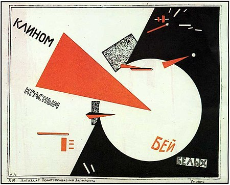

Конструктивиизм — направление в изобразительном искусстве, архитектуре, фотографии и декоративно-прикладном искусстве, зародившееся в 1915 году и существовавшее до первой половины 1930-х годов в СССР.

Конструктивизм принято считать советским явлением, возникшим после Октябрьской революции в качестве одного из направлений нового, авангардного, пролетарского искусства, хотя, как и любое явление в искусстве, он не может быть ограничен рамками одной страны. Так, провозвестником этого направления в архитектуре можно рассматривать, например, такие сооружения как Эйфелева башня, которая использовала принцип открытой каркасной структуры и демонстрировала конструктивные элементы во внешних архитектурных формах. Этот принцип обнаружения конструктивных элементов стал одним из важнейших приемов архитектуры XX века и был положен в основу как интернационального стиля, так и конструктивизма.
Возможно, вам также понравятся статьи: